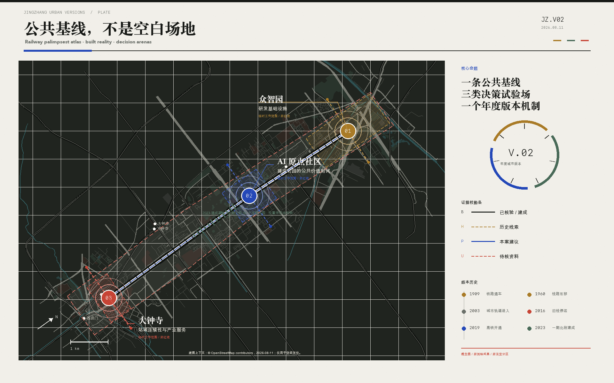
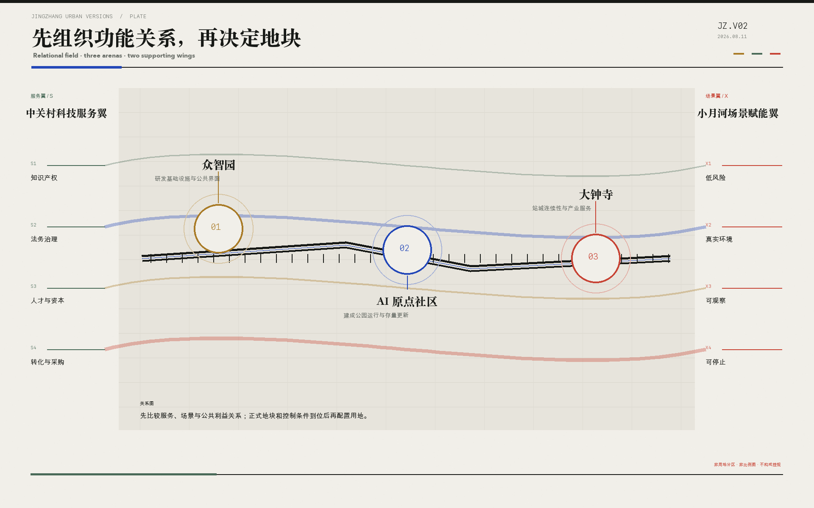
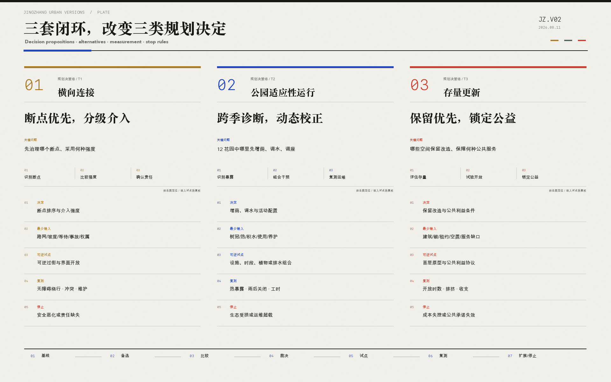
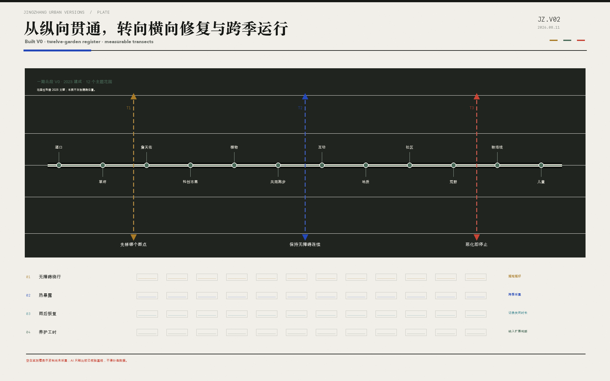
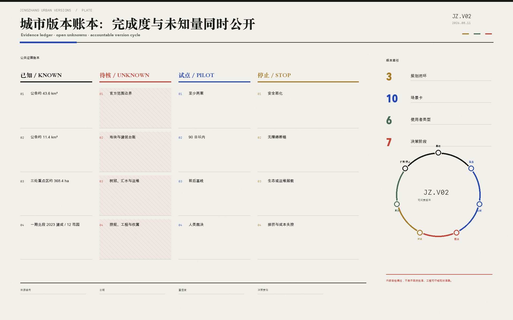

一条公共基线
01 · 总览地图 / 三层范围
先把已经发生的城市事实登记为共同起点

1909京张铁路通车
2019京张高铁开通
2023一期北段建成
12据 2025 文献记载的主题花园
02 · 重点区域 / 用地分区 / 建筑
三个重点区承担不同的空间任务，不套用同一套科技园模板
众智园
研发基础设施与公共界面
把共享研发、测试资源、知识产权和采购服务组织为可进入、可查询的公共前台。
AI 原点社区
建成公园与存量更新
以一期北段 12 个主题花园为运行基线，复测热、雨、活动和首层公共服务。
大钟寺
站到街与产业服务
逐点修复站城联系和首层连续性，在真实使用中检验产业服务的公共价值。

03 · AI 协作规划
AI 参与备选生成与复测，责任裁决仍由法定程序和人类主体完成
横向连接
先治理哪个断点、采用何种干预强度
- 输入
- 路网、坡度、等待、事故、权属
- 试点
- 可逆过街与界面开放
- 停止
- 安全恶化或责任未落实
公园适应性运行
12 个花园中哪里先增荫、调水、调座
- 输入
- 树冠、热、积水、使用、养护
- 试点
- 设施、时段、植物或排水组合
- 停止
- 生态受损或运维超载
存量建筑更新
保留改造什么、以何种公共条件准入
- 输入
- 建筑、碳、租约、空置、服务缺口
- 试点
- 一个首层与公共界面原型
- 停止
- 成本失控或公共承诺失效

04 · 交通慢行 / 蓝绿公共空间
从纵向贯通转向横向修复，并以跨季运行决定增量

05 · AI 场景 / 更新项目
十个场景首先是决策协议，其次才是数字服务
| ID | 场景 | 改变的决定 | 非数字与人审入口 |
|---|---|---|---|
| S01 | 研发资源匹配 | 检验众智园公共前台 | 人工咨询与纸面目录 |
| S02 | 开放模型基准 | 比较本地任务的模型适用性 | 专家复核与异议入口 |
| S03 | 合规采购助手 | 解释成本、风险与公共条件 | 责任人签署决定 |
| S04 | 完整无障碍路径 | 比较典型使用者绕行与等待 | 现场服务与固定导视 |
| S05 | 公园热舒适 | 支持跨季增荫与调座 | 人工观察，不使用人脸识别 |
| S06 | 雨后恢复与养护 | 形成积水、关闭和工时台账 | 现场巡检为准 |
| S07 | 活动时段协调 | 平衡安静、通行、免费停留 | 公开日历和人工申诉 |
| S08 | 首层共享服务 | 检验开放时段、价格和维护 | 线下预约与现场窗口 |
| S09 | 站城服务协同 | 比较站到街连续性方案 | 交通与消防专项复核 |
| S10 | 年度项目复盘 | 公开继续、调整、停止与未做事项 | 会议、纸本与网站同等公开 |
06 · 国际机制比较
借鉴组织方法，不复制机构品牌或园区形态
Vector Institute
公共资助与产业网络
借鉴共享能力，不复制机构规模Mila
研究、人才与社会责任
借鉴开放网络，不造封闭园区Alan Turing Institute
国家研究任务与公共利益
借鉴项目制，不用品牌代替空间AI Singapore 100E
以真实问题组织限期实验
借鉴问题制和退出机制Seoul AI Hub
城市级企业与测试支持
借鉴公共接口，不承诺未经验证的集聚AI Verify
可测试的治理框架
借鉴记录与测试，不把工具当认证07 · 核心指标 / 任务覆盖 / 自检状态
指标用于检验决策质量，未知量继续保持未知

08 · 来源 / 假设
证据等级决定表达强度，正式资料决定下一版本
官方公告和任务书确认范围口径与任务；2025 年论文确认一期北段的文献所载建成事实；2020 年六组竞赛文本只提供方法史料。本案不复制第三方图形、照片或 PDF；总览图的道路、轨道、水系和绿地上下文来自 © OpenStreetMap contributors（ODbL），仅供定位。
官方边界、地块、建筑、权属、树木、汇水、控规和工程条件仍待补齐。本版的点与关系线是调查和试点任务，不是测绘成果、法定分区或承诺工程。